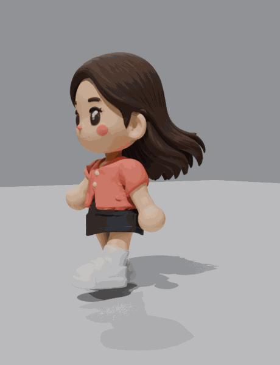
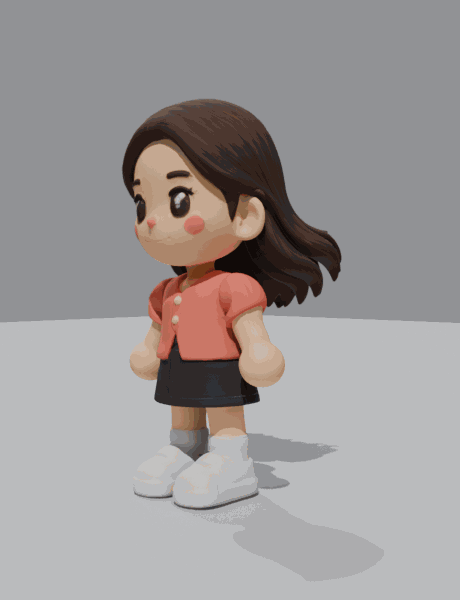

Walk

Grounded walk with a soft arm swing. Sleeves & shoulders now deform cleanly; head held steady so the chin stays smooth.
Idle

Calm standing idle — gentle breathing, slow weight-shift, and hair settled down naturally.
Kiss with Bred

Summer replaces Spring (a touch shorter than Bred). They walk in and kiss — Bred stays upright with his arms around her waist (no crouch) while she reaches up to him.